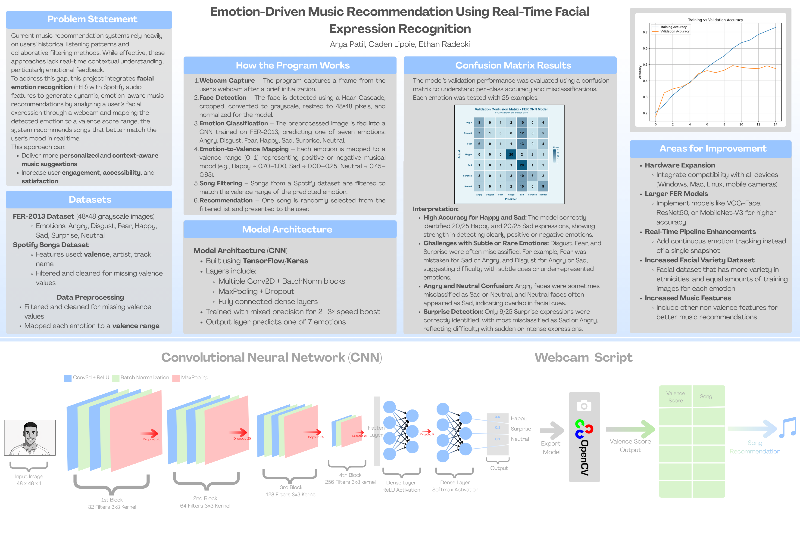
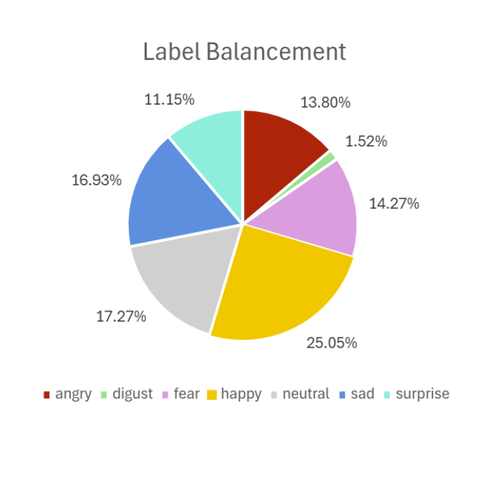
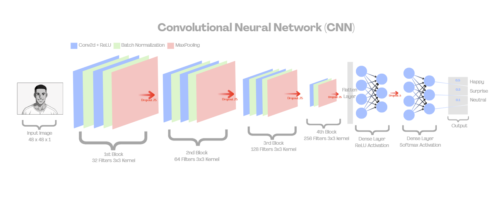
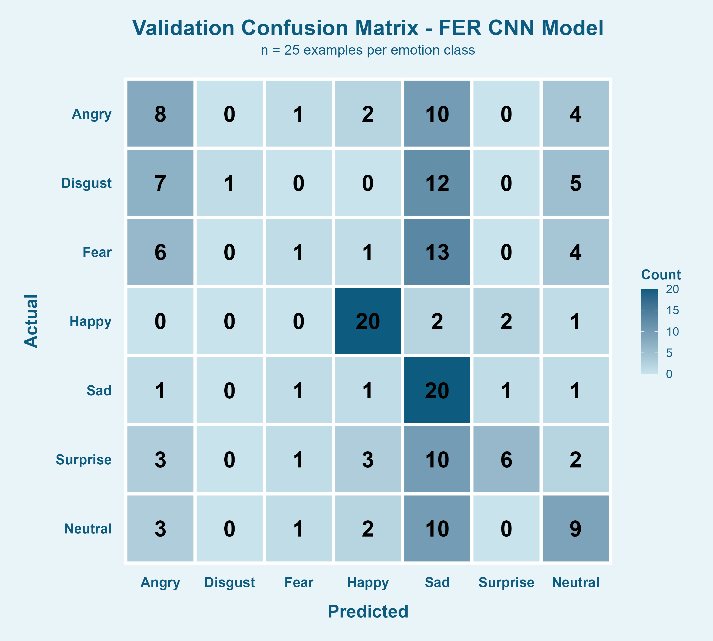
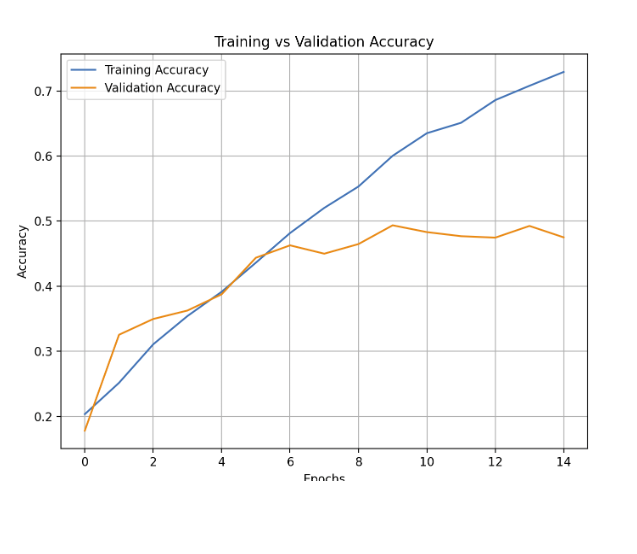
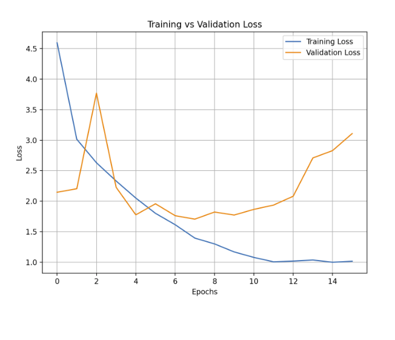

Emotion to Music Recommender
Using CNNs and OpenCV
A real-time pipeline that reads a user's facial expression through a webcam, classifies it into one of seven emotions using a CNN trained on 35,887 images, maps the result to a Spotify valence range, and returns a song recommendation. The model achieved 46-50% validation accuracy and 37.1% accuracy on live trials, versus a 14.3% random chance baseline.

Project poster summarizing the problem statement, system pipeline, model architecture, and results.
Bridging Facial Recognition and Music Recommendation
Current recommendation systems rely on listening history and collaborative filtering. They have no awareness of how you feel right now. This project closes that gap: a CNN classifies your facial expression in real time, and the result drives a Spotify song recommendation matched to your detected mood via a valence mapping system.
FER-2013 Dataset
The FER-2013 dataset contains 35,887 grayscale 48x48 pixel face images split into 28,709 training and 7,178 test images across seven emotion classes. The dataset is imbalanced: Happy accounts for 25% of images, while Disgust represents just 1.52%. This directly predicts model performance, with happy and sad classifying reliably and disgust classifying poorly.

Figure 1. Label distribution across the seven emotion classes. Happy dominates at 25.05%; Disgust represents only 1.52%.
Model Architecture and System Pipeline
The model is a 4-block CNN with increasing filter counts (32, 64, 128, 256), each block detecting progressively more complex facial features. The input is a 48x48x1 grayscale image. Every block uses Conv2D layers with ReLU activation, batch normalization, max pooling, and dropout to control overfitting.
Each block ends with max pooling and 25% dropout. Batch normalization centers activations around zero. Max pooling downsamples 2x2 windows to reduce computation and prevent overfitting.
256 filters at 3x3 kernel size. Zero padding keeps spatial dimensions consistent, allowing filters to learn features closer to image edges.
Flatten converts 3D feature maps to a 1D vector. First dense layer: 256 units, ReLU, 50% dropout. Final layer: softmax output across seven classes.
A single frame is captured after a five-second delay. A Haar Cascade classifier detects the face, crops and resizes it to 48x48, and passes it to the model.

Figure 2. CNN architecture. Four convolutional blocks (32, 64, 128, 256 filters) feed into a flatten layer and two dense layers for 7-class emotion prediction.
Each detected emotion maps to a Spotify valence range (0-1). Happy: 0.70-1.00 · Surprise: 0.60-0.90 · Neutral: 0.45-0.65 · Fear: 0.10-0.30 · Sad: 0.00-0.25 · Angry: 0.05-0.25 · Disgust: 0.10-0.30. Songs matching that range are filtered from the Spotify dataset and one is randomly selected for the user.
The full end-to-end pipeline:
A frame is captured after a brief initialization delay.
Haar Cascade detects the face, crops it, converts to grayscale, and resizes to 48x48 pixels.
The preprocessed image is fed into the CNN, predicting one of seven emotions.
The predicted emotion maps to a valence range (0-1) representing musical mood.
Spotify dataset is filtered to songs within the predicted valence range.
One song is randomly selected and returned with title, artist, and valence score.
Emotion-by-Emotion Accuracy
Performance varied significantly by emotion class. Happy and Sad both reached ~80% accuracy in live trials. Disgust and Fear each fell to just 4%, driven by their underrepresentation in training data and visual similarity to Sad and Angry. Overall live accuracy was 37.1%, more than 2.5x the 14.3% random chance baseline.

Figure 3. Validation confusion matrix (n=25 per class). Happy and Sad show strong diagonal concentration. Disgust, Fear, and Surprise were frequently misclassified as Sad.

Figure 4. Training vs validation accuracy. Validation stalls at 46-50% around epochs 14-16 while training continues climbing toward 76%, signaling overfitting.

Figure 5. Training vs validation loss. Validation loss bottoms out around epochs 4-10, which is why the model exits training at epoch 15 and uses parameters from the best epoch.
What Worked, What Didn't, and What's Next
The system works as a proof of concept. Real-time emotion detection driving music recommendations is technically achievable, and the results clearly beat random chance. But the gap between validation accuracy and real-world performance points to meaningful limitations.
Happy and Sad both hit 80% live accuracy. These emotions are visually distinct and well-represented in training data. The valence mapping for these two classes works reliably end-to-end.
Fear and Disgust dropped to 4%, both visually similar to Sad and severely underrepresented in training. The model in practice also struggled with subtle, real-world expressions, as it performs better on exaggerated facial movements.
Training accuracy climbed to 76% while validation stalled at 46-50%. Despite dropout and batch normalization, the gap persisted. Deeper regularization or a pre-trained backbone like MobileNet-V3 or ResNet50 would likely close it.
A reinforcement learning layer that adjusts recommendations based on whether the user liked the song would make the system genuinely adaptive. A more balanced, ethnically inclusive dataset would also improve robustness for subtle expressions across different users.
A custom 4-block CNN trained on FER-2013 achieved 37.1% live accuracy across seven emotion classes, versus a 14.3% random baseline. The system successfully bridges emotion recognition and Spotify valence filtering into a working real-time pipeline. The clearest path forward is replacing the custom CNN backbone with a pre-trained model and adding a user feedback mechanism to make recommendations learn over time.